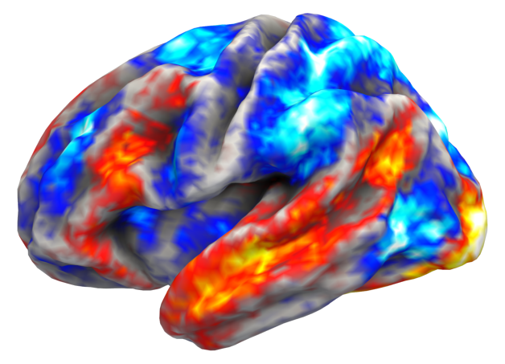
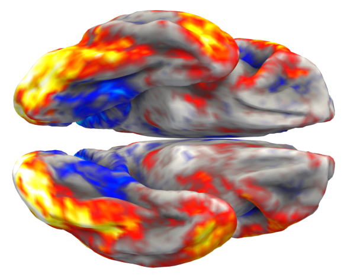
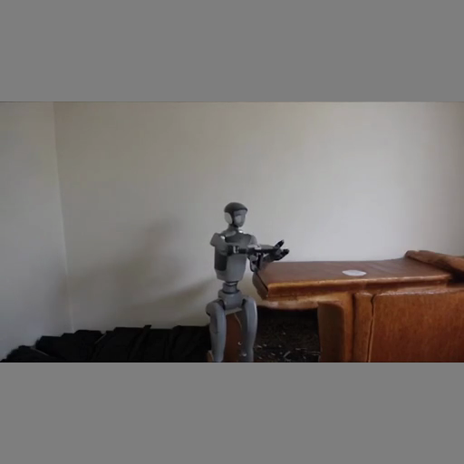
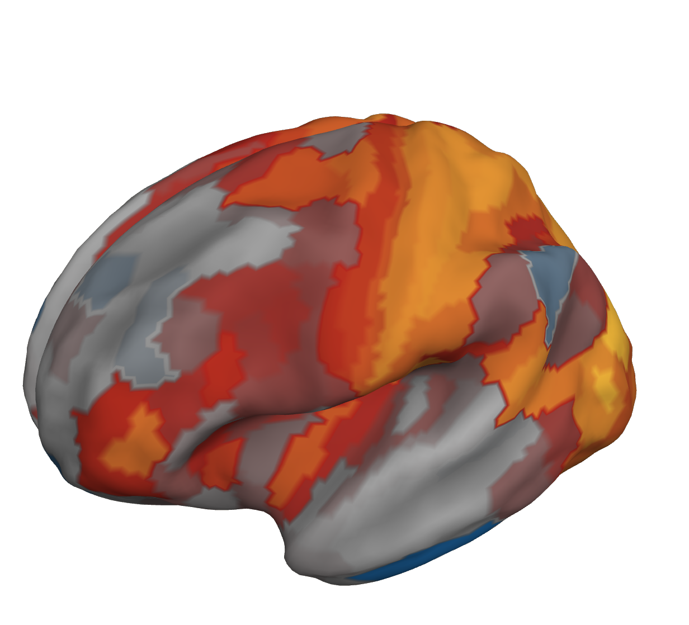
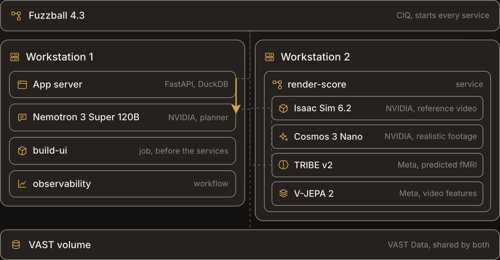

1Every comparison costs scanner hours
To find out what drives a response, researchers need to vary what people see, hear, or know going into a scene. Testing those comparisons with people gets expensive fast, at tens of thousands of dollars per study.
2Agent-first hypothesis testing
Simulaxon gives researchers a way to develop the experiment before they bring in participants.
- The agent decides what to vary and what to hold fixed.
- It generates the clips and compares the predicted brain responses.
- It can then run a follow-up to see whether a pattern persists when another detail changes.
3Predictions come from Meta's TRIBE v2
TRIBE v21 trained on fMRI recordings of people watching films, television, and short videos of everyday events. In separate evaluations, it recovered known patterns of brain activity for seeing faces versus places and hearing descriptions of emotional versus physical pain.





4An adapter fits TRIBE v2 to real people
TRIBE v2 predicts an average viewer it has never met. Given people's measured fMRI, one click fits an adapter: a map from TRIBE v2's prediction for each brain area to the responses those people had.

5One round runs on two CIQ workstations
The app and the video pipeline together need an estimated 150 GB of memory, so Fuzzball starts them on separate 128 GB workstations and gives both access to the same VAST storage.

- Planner on workstation 1. When you submit a hypothesis, Nemotron Super 120B plans the experiment on the first workstation.
- Hand-off to workstation 2. The app sends the scene specifications to the second workstation.
- Isaac Sim render. Isaac Sim 6.2 renders a reference video.
- Cosmos restyle. NVIDIA Cosmos 3 Nano uses it to generate realistic footage (181 s for the vase clip).
- TRIBE v2 prediction. TRIBE v2 predicts the fMRI response to each clip (11 s).
- Back to the planner. The app sends the predictions back to Nemotron to compare conditions.
- Follow-up on Fuzzball. If the agent chooses a follow-up, the app submits it to Fuzzball.
- Every round on VAST. Each round adds its clips, predictions, and log to the same VAST volume, so you can trace each result back to what the agent changed.
6The cluster matches the desk and fits in memory
Prometheus and Grafana run beside the services as their own Fuzzball workflow and read every node and GPU job. Values on 15 November, from the dashboard.
| 0.9991 | Cluster against desk | Median per-clip r, cluster against DGX Spark, same clips. |
| 21.5 tok/s | Planner reply speed | Nemotron Super 120B, MTP speculative decoding on the cluster; 11 to 16 without it. |
| 115 / 122 GiB | Workstation 1 | Memory in use on CIQ-CHI-SPARK26: planner, app server, monitoring. |
| 69 / 120 GiB | Workstation 2 | Memory in use on CIQ-CHI-SPARK25: render-score, 52.6 GiB in its container. |
| 0.64 / 0.63 | Busy GPU-hours | Planner and render-score, 6 h; busy 10% and 16% of the time held; peak 74 W and 81 W. |
| 9.6 s | First token | Planner, median over 6 h; peak 24.6 tokens/s. |
7Five steps in the app
- Ask the agent to design an experiment around your hypothesis.
- Upload footage or describe the scenes you want to test.
- Review the generated scenes and predicted responses alongside the agent's follow-up experiments.
- If you have access to some fMRI recordings that you want to extrapolate on, these can be fine-tuned to customize simulation results.
- Run robotics experiments that use predicted human brain responses to test whether a robot can better anticipate what someone is about to do from the way they move.